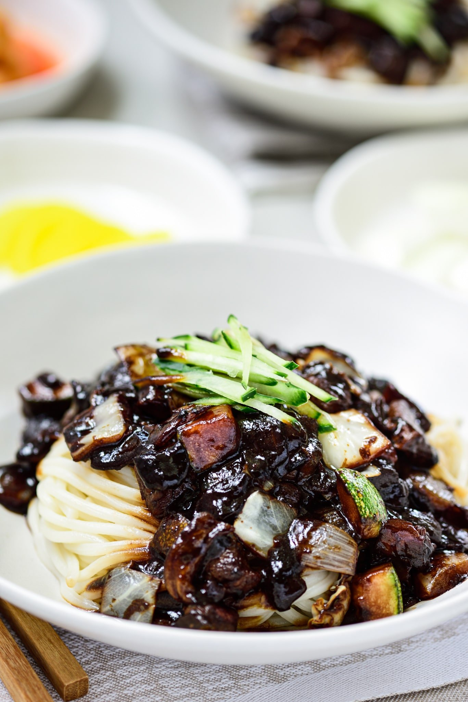

Black Bean Noodles (Jajangmyeon)
Black Bean Noodles (Jajangmyeon)

A bowl of black bean noodles
Description
This Korean-Chinese dish is delicious!
Ingredients
- 3 to 4 servings fresh jajangmyeon/udon noodles
For the Sauce:
- 5 tablespoons Chunjang, Korean black bean paste some may be labeled as jjajang
- 2 tablespoons cooking oil
- 1 tablespoon sugar
- 1 tablespoon oyster sauce (optional)
- 1 cup chicken stock or water You can add 1/2 cup more for thinner, more liquidy/watery sauce. If more is added, complement with 1 tsp more starch slurry
- 1 tablespoon potato or corn starch dissolved in 1/4 cup of chicken stock or water
For the Meat:
- 8 to 10 ounces pork (preferably with some visible fat, pork shoulder cut, Boston butt, etc.) or lean cut if preferred
- 1 teaspoon grated ginger
- 1 tablespoon rice wine (or mirin)
- 1/8 teaspoon each salt and pepper
- 2 tablespoons cooking oil
- 1 tablespoon soy sauce
For the Vegetables:
- 1 extra large onion (or 2 medium, 12 to 14 ounces)
- 8 ounces green cabbage
- 8 ounces zucchini
- 1 small cucumber for garnish (optional)
Steps
- Have a pot of water ready to cook the noodles. Turn the heat on when you start cooking the meat. This way you will have the boiling water ready, for cooking the noodles, by the time the sauce is done.
- Prepare the pork and vegetables by cutting them into 1/2 - 3/4 inch cubes. Marinate the pork with a tablespoon of rice wine (or mirin), ginger, salt and pepper while preparing the vegetables.
- Add the black bean paste to a small saucepan with the oil, sugar, and the optional oyster sauce. Fry it over medium heat for 2 - 3 minutes, stirring constantly.
- Heat a large pan with 2 tablespoons of cooking oil over medium high heat. Add the pork and stir fry until no longer pink, adding a tablespoon of soy sauce half way through.
- Add the onion and cook until soft, stirring occasionally.
- Add the cabbage and zucchini and continue to stir fry until vegetables are softened.
- Stir in the black bean paste and mix everything together until all the meat and vegetables are coated well with the paste.
- Mix everything together until all the meat and vegetables are coated well with the paste. If you like ganjjajang, you can stop here and skip the next two steps.
- Pour in the stock (or water) and bring it to a boil. Cook for 3 to 4 minutes.
- Stir in the starch slurry and cook briefly until the sauce is thickened. Add more sugar to taste.
- Add the noodles in the boiling water. Cook according to the package instructions and drain. Do not overcook. The noodles should have a firm bite to them (al dente). Place a serving size of noodles in each bowl. Spoon the sauce over the noodles and garnish with the optional cucumber matchsticks. Alternatively, you can serve over cooked rice.
Notes:
- If you're adding some potatoes, dice smaller than other vegetables, and add to the pan when the onions are added. Or you can briefly cook diced potatoes in the microwave because it takes longer to cook potatoes than the other vegetables.
- Ganjajang is a drier sauce made without the addition of any water or stock. Some people prefer it this way, but this will yield less servings. (See the body of this post for types of jajangmyeon.)
- If you want your sauce to be more liquidy/watery, add an addition 1/2 cup of stock or water with a little more starch when you make starch slurry (about 1 teaspoon more).
Recipe Credit: Hyosun on her website, Korean Bapsang
Find more recipes